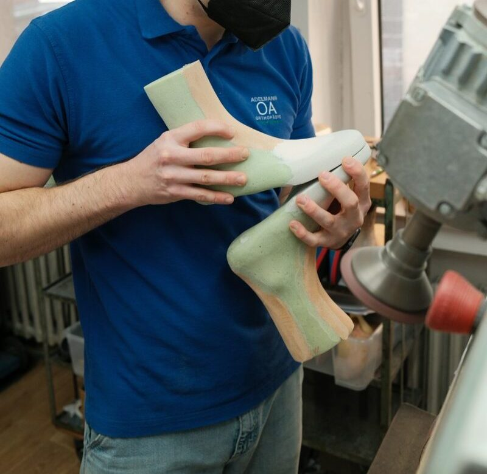

Ein Maßschuh entsteht im persönlichen Gespräch. Schildern Sie uns kurz Ihr Anliegen und Ihren Wunschzeitraum. Wir melden uns innerhalb von 1 bis 2 Werktagen mit zwei bis drei konkreten Terminvorschlägen.

Von der ersten Anfrage bis zum fertigen Schuh vergehen in der Regel 4 bis 6 Wochen. Sehr komplexe Versorgungen können auch länger dauern.
Anamnese, Fußabdruck, 2D-/3D-Scan und Fotos. Kassen- und Rezeptfragen besprechen wir direkt im Termin.
Bei Maßschuhen auf Rezept reichen wir den Kostenvoranschlag bei Ihrer Krankenkasse ein. Bevor wir in die Produktion starten, warten wir die Genehmigung der Krankenkasse ab. So ist Ihre Versorgung auch finanziell gesichert.
Wir nehmen Maße vom Fuß, erstellen einen Blauabdruck, machen Fotos und 2D- und 3D-Scans. Bei komplexeren Versorgungen inklusive Gipsabdruck. Anschließend fertigen wir Ihren individuellen Leisten. Bei der Anprobe prüfen wir gemeinsam die Passform und wählen Schaftmodell und Schuhform aus.
Der fertige Maßschuh wird übergeben, eingelaufen und bei Bedarf nachjustiert. Wir begleiten Sie auch danach.
Alle mit markierten Felder sind Pflichtfelder. Wir behandeln Ihre Angaben vertraulich und nutzen sie ausschließlich zur Terminabstimmung.